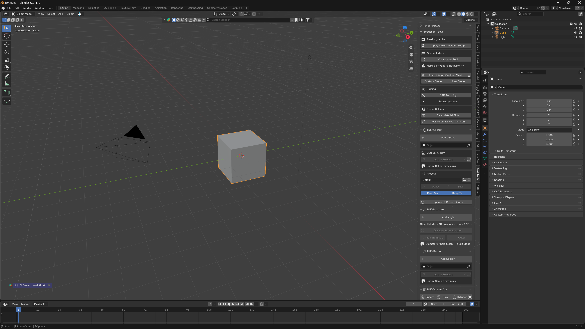
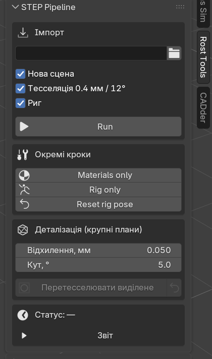
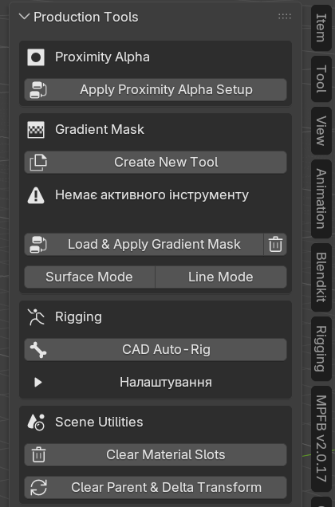

Гайд по всьому аддону: що є на панелі, як кожен інструмент використовується крок за кроком, і що зроблено в 4.0. Вкладка Rost Tools у бічній панелі 3D-в'юпорту (клавіша N).
Усі блоки живуть в одній вкладці. Блоки розгортаються кліком на заголовок. Render Passes тепер теж тут (раніше була вкладка EXM).

Скріншот з Blender: вкладка Rost Tools у 3D-в'юпорті з блоками Render Passes, Production Tools, HUD-блоками, Rost Light Rig і STEP Pipeline.Порядок блоків у панелі: Render Passes, Production Tools, HUD-блоки, Light Rig, STEP Pipeline.
2. STEP Pipeline — імпорт STEP, матеріали, риг
Блок призначений для STEP-файлів з папки моделей (зараз EXM). Він імпортує модель, перетесселює її, призначає матеріали, будує риг і лишає сцену готовою для збірки.

Блок STEP Pipeline: імпорт, окремі кроки, деталізація, статус.Кнопка Run проходить весь потік за один клік. Окремі кроки можна запускати поодинці в блоці «Окремі кроки».
Крок 1. Підготуй сцену
1
Для нової моделі увімкни Нова сцена: створиться сцена PIPE_<код>. Якщо вимкнути, імпорт піде в поточну сцену, а вона має бути порожньою (без мешів).
Крок 2. Вибери STEP і налаштуй перемикачі
2
У розділі Імпорт вкажи шлях до STEP-файлу.
3
Тесселяція 0.4 мм / 12° — вмикай для звичайних моделей. Вимкнення залишить налаштування CADder за замовчуванням.
4
Риг — вмикай, щоб після матеріалів одразу побудувався риг (CAD Auto-Rig плюс механіка дверей, замків і газліфтів).
Крок 3. Натисни Run
5
Натисни велику кнопку Run. Статус і час видно внизу блоку. Поки модель обробляється, кнопка неактивна.
6
Перевір звіт (розгортається галочкою Звіт): фарба, незмаплені матеріали, розміри дверей і кути, кількість замків, ходи газліфтів.
Якщо в звіті є Незмаплені, деталь отримала магентовий матеріал _UNMAPPED. Це сигнал додати правило в material_rules.json, а не помилка імпорту.
Окремі кроки
Кнопка
Коли використовувати
Materials only
Перепризначити матеріали всім мешам поточної сцени, наприклад після зміни правил матеріалів.
Rig only
Побудувати риг для сцени. Доступна, поки ригу в сцені ще немає (одна дія на сцену).
Reset rig pose
Повернути всі кістки в рест-позу (закрито). Корисно, якщо риг зламався після ручних змін.
Деталізація для крупних планів
1
Виділи деталі у в'юпорті. Якщо виділити empty, перетесселюються всі деталі під ним.
2
У полях Відхилення, мм (за замовчуванням 0.05) і Кут, ° (за замовчуванням 5) задай точність. Менші значення дають точнішу сітку і більше граней.
3
Натисни Перетесселювати виділене. Деталь лишається на місці: риг, анімація й матеріали зберігаються.
4
Кнопка ↺ повертає робочу точність 0.4 мм / 12°.
Деталі не спрощуємо. Перетесселяція робить сітку точнішою, тому її застосовують лише до крупних планів перед фінальним рендером.
3. CAD Auto-Rig — кістки для будь-якої моделі
CAD Auto-Rig будує скелет по дереву об'єктів. Він не знає, що таке двері чи газліфт, тому підходить для будь-якого STEP-файлу або будь-якої сцени з мешами.
Кожен меш отримує свою кістку (префікс B_) у його півоті. Ієрархія повторює ієрархію об'єктів. Empty стають допоміжними кістками без деформації.
Як запустити
1
Виділи меші, які треба зарадити. Порожні об'єкти можна виділити разом із ними, вони стануть допоміжними кістками.
2
У блоці Production Tools → Rigging натисни CAD Auto-Rig.
3
Налаштування (кільця, довжини кісток, обертання) — у розгортному блоці Налаштування. Назви для UE (Armature, RigRoot, B_<меш>) фіксовані.
4
Повторний запуск безпечний: меші вже прив'язані до арматури, тому кістки перебудуються без подвоєння.
Окремо від CAD Auto-Rig STEP Pipeline додає механіку (обмеження обертання дверей, замків, Damped Track на газліфтах). Для загальної моделі без механіки достатньо CAD Auto-Rig.
4. Rost Light Rig — світло з контролерами
Один арматурний риг тримає 21 слот світла з фіксованими каналами. Тобто будь-яка дія (action) з налаштуваннями працює на іншому екземплярі рига однаково.
Джерело — маніпулятор у формі лампи. Ціль лежить на куполі, тому цілі легко розрізнити. Лінія показує напрям прицілу.
Крок 1. Додай риг
1
Виділи об'єкти, які треба освітити. Без виділення риг охопить усі видимі меші, крім студії, практикалів і віджетів.
2
Додай через Add → Light → Rost Light Rig або кнопкою Add Light Rig на панелі.
Крок 2. Увімкни слоти і налаштуй їх
3
За замовчуванням увімкнені Key, Fill, Rim і Top. Інші слоти вмикаються прапорцем з оком біля назви. Групи (Main, Additional, Spots, Points) згорнуті, щоб панель не розросталась.
4
Вибери слот у списку — відповідне джерело підсвітиться у в'юпорті. І навпаки: клік на маніпулятор у в'юпорті вибирає слот на панелі.
5
У секції Settings крути слайдери: Exposure (±4 стопи), Temperature (±3800 K), Spread (±90°) або Cone (±60°), плюс Tint, Power, розмір і форма (Square, Rect, Disk, Ellipse).
6
Кнопка Select lamp виділяє саму лампу — там колір, потужність і ноди шейдера (в Cycles вільні лише ноди, решта керується з рига).
Крок 3. Анімуй
7
На першому кадрі натисни велику KEY ALL — вона ключує все: увімкнені слоти, налаштування, положення кісток і слайдерів. Далі анімацію ключуєш сам.
Пресети
Дія
Що робить
Save (first frame)
Зберігає стан рига з першого кадру сцени як JSON-файл. Анімація не зберігається, тільки один кадр. Та сама назва перезаписує файл.
Apply
Ставить пресет на поточному кадрі. Якщо риг уже має ключі, ключує і цей кадр, інші ключі лишаються.
Fit to model size
Пресет, зроблений під модель іншого розміру: відстані й розміри ламп масштабуються, потужність — квадратом коефіцієнта.
Delete
Видаляє файл пресету.
Папку пресетів можна задати в налаштуваннях аддона (поле Light Rig presets folder). Порожнє значення — тека пресетів Blender.
5. HUD-інструменти
Блоки HUD працюють з бібліотекою HUD_Elements.blend (шлях у налаштуваннях аддона). Назви кнопок нижче взяті з коду; покрокові сценарії для кожного інструменту варто перевірити на тестовій сцені.
Блок
Кнопки
Призначення
HUD Callout
Add Callout, Add to Selected, Remove / Refresh Cutout, Presets (Save / Apply / Delete / Open folder), Keep Start / Keep Text, Update HUD from Library
Виноска з бібліотеки. «Cutout / X-Ray» вирізає дірку в мешу без Boolean, щоб виноска було видно через об'єкт. Пресети зберігають вигляд виноски.
HUD Measure
Add Angle, Diameter from Selection, Angle from Selection, Outer, Add Handles
Розмірні лінії: кут і діаметр. Діаметр і кут з виділення працюють в Edit Mode. Ручки A / B / Label задають точки і текст.
HUD Section
Add Section, Add to Selected, Remove Section, Refresh Section
Розріз моделі з видимою відсіченою частиною (GHOST), каркасом, бордером і заливкою розрізу. Опції: Panel, Material, Real cap (mesh), Close gaps.
HUD Style
Add Style, Apply Style, Use Style on Selected
Єдиний стиль для виносок і розмірів: лінії, текст, гапи, стрілки, шрифт і матеріали.
Add Volume Cut, форма (Sphere, Box, Cylinder, Custom), Add to Selected, Refresh, Remove
Різак об'єму: пустота, яка показує внутрішню частину моделі. Має ті самі опції, що й Section.
6. Production Tools

Панель Production Tools: Proximity Alpha, Gradient Mask, Rigging, Scene Utilities.
Блок
Кнопки
Призначення
Proximity Alpha
Apply Proximity Alpha Setup
Прозорість, яка залежить від відстані до камери або об'єкта. Налаштовується на виділених мешах.
Gradient Mask
Create New Tool, Load & Apply Gradient Mask, Surface Mode / Line Mode, Min / Max
Градієнтна маска по напрямку empty. Спершу створи інструмент (Create New Tool), потім завантаж маску. Режим Surface або Line.
Rigging
CAD Auto-Rig, Налаштування
Див. розділ 3.
Scene Utilities
Clear Material Slots, Clear Parent & Delta Transform
Прибирає слоти матеріалів у виділених мешах або скидає батька й Delta Transform, зберігаючи положення в сцені.
7. Render Passes — рендер по шарах
Окремий аддон (rost_render_passes), який тепер теж у вкладці Rost Tools. Рендерить view layers окремими проходами: основна сцена з DoF, виноски без DoF і з альфою. Потім шари збираються в DaVinci Resolve або Fusion.
1
Для кожного пасу вибери view layer, DoF, альфу, денойз, рушій, семпли і шлях (токени {scene}, {layer}, {blend}).
2
Пресет якості: Workbench, Light, Medium або Production. Галочка All scenes застосовує його до всіх сцен.
3
To All Scenes копіює список пасів поточної сцени в усі інші.
4
RENDER ANIMATION рендерить усі паси по черзі. Render Frame N рендерить один кадр і перезаписує файл з тим самим номером.
8. Типові проблеми
Симптом
Що зробити
Панель дублюється або не з'являється після оновлення аддона
Перезапусти Blender. Старі класи панелей лишаються в пам'яті до перезапуску.
Риг не будується (помилка про модуль)
Перевір addon_module у rig_rules.json — має бути rost_production_tools_13, і аддон увімкнений.
Розгорнуті панелі після перезапуску
Панелі мають стан DEFAULT_CLOSED. Якщо вони відкриті, затисни Ctrl і клікни на заголовок — згорнеться все інше.
Деталь має магентовий матеріал
Додай правило в material_rules.json і натисни Materials only.
Пресет світла «з'їхав» на іншій моделі
Використай Fit to model size або перезбери пресет з потрібної моделі.
Ще не перевірено: корекція замка (поворот корпусу, коли язичок іде вниз) на свіжому імпорті STEP; значення ходу газліфта береться з правил, а не з datasheet; збереження .blend за назвою STEP і пакетний рендер поки не в панелі.